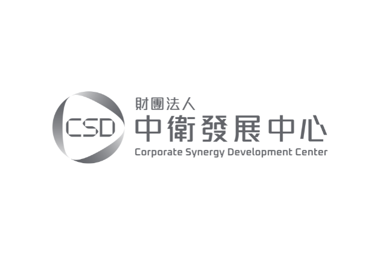
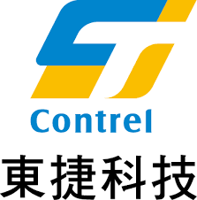

⚡ 外銷業務的新武器
💡 找不到想要的？點我許願，老師會持續新增 💬 加入阿峰老師 LINE 社群
B2B 外銷業務 AI 提示詞工具箱
300+ 個真實外銷實戰提示詞，依業務動作分類（查客戶、查市場、報價、談判、展會、拜訪、追蹤、驗廠、AI 日常雜務…），選情境、填資料、一鍵複製貼到 AI。
機械、設備、精密零件、工業品，到保健品與 B2B 服務都適用。下面的範例以橡膠外銷情境示範，把「產品」換成你自己的（CNC 工具機、機械零件、精密加工、保健食品、設計整案⋯）就能直接用。
🧩 RCE 指令範本速查手冊 → 挑三塊積木，AI 幫你組指令 by 阿峰老師（AI峰哥）・企業 AI 實戰培訓・看老師能怎麼幫你的團隊0實戰提示詞
0分類
三步驟選 → 填 → 複製
💡 找不到想要的？點我許願，老師會持續新增 💬 加入阿峰老師 LINE 社群
1
選你要做的事
打關鍵字、或用一句話描述你卡在哪，下面就會篩出最適合的
2
填你的資料
把空格換成你的真實狀況，下面會自動組好（先留著範例參考也可以）
3
複製去用
可以直接在框裡改文字，再貼到 ChatGPT / Claude / Gemini
阿峰老師服務過的製造／貿易／外銷相關企業
同產業都在用 AI 加速開發、報價、談判 —— 想讓你的外銷團隊也上手？往下找老師聊聊。


外貿協會 TAITRAB2B 行銷 × AI 實戰講座
工研院 產業學院製造業 AI 應用實戰培訓
英業達 Inventec電子製造團隊 AI 內訓
中衛中心 CSD製造業 AI 導入顧問輔導
東捷科技自動化設備業 AI 培訓
學員怎麼說
取自阿峰老師實際課程的學員見證
「進公司前我對電腦幾乎零基礎，這是我第一次用 AI。我做業務、要做簡報，以前所有文字都自己想；現在把客戶需求貼進去，AI 很快就幫我生出一份簡報，從接到需求到產出快超多。」
—— 業務人員「以前只會用 ChatGPT，今天學到深度研究、趨勢分析這些技法。最有感的是——可以先問 AI「這個客戶可能會問什麼」，先演練再上場。」
—— 中小企業學員阿峰老師（黃敬峰・AI峰哥）
企業 AI 實戰培訓專家
「會用、懂用、好用、每天用」——讓 AI 變成外銷團隊每天在用的工具，不是聽完就忘的演講。
- 帶企業與單位做「真的用得上」的 AI 實戰內訓，學員上完課當週就用在工作上
- 把你產業的真實情境，做成像這個工具一樣的專屬版，全體（含新人）當天上手
- 從你團隊最痛的 3 個環節切入，先診斷再設計，不賣罐頭課程
服務過 國泰、工研院、英業達 等企業、政府機關，與製造／金融／保險第一線團隊
💡 你現在用的這個工具，就是阿峰老師幫企業做的其中一個。想要你們公司「自己產業、自己產品」的專屬版？